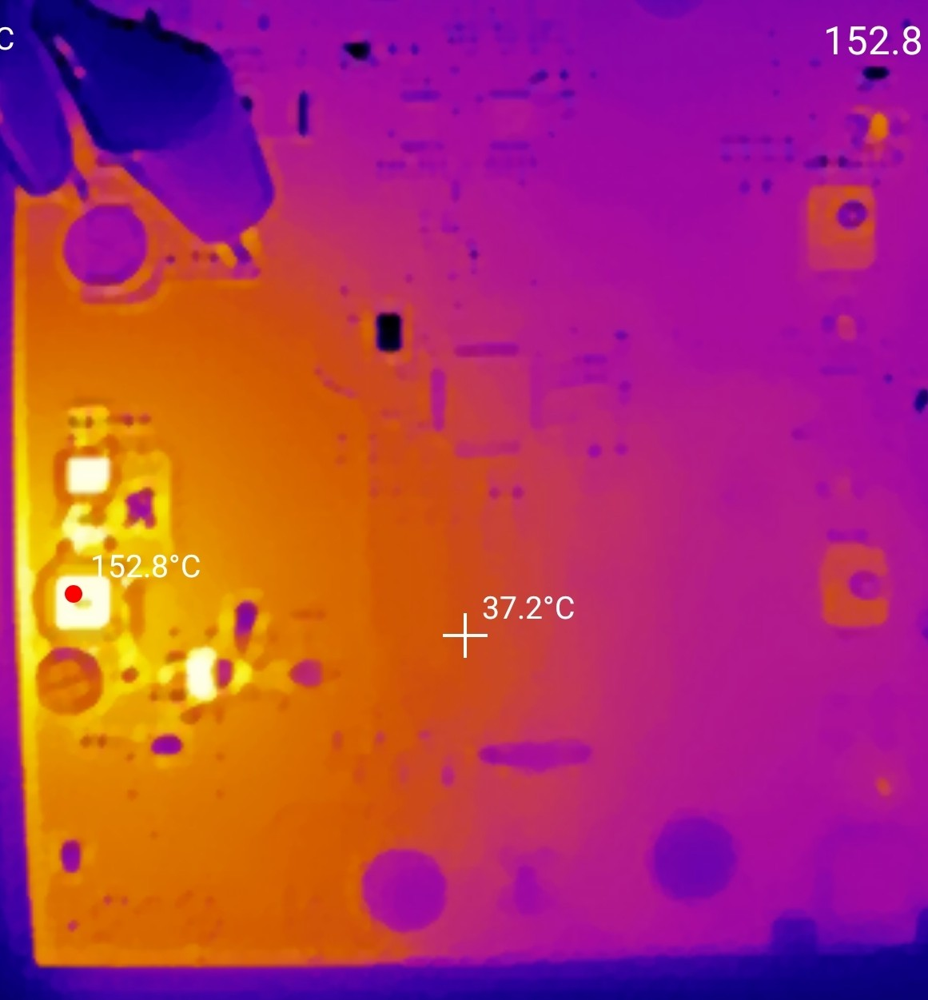
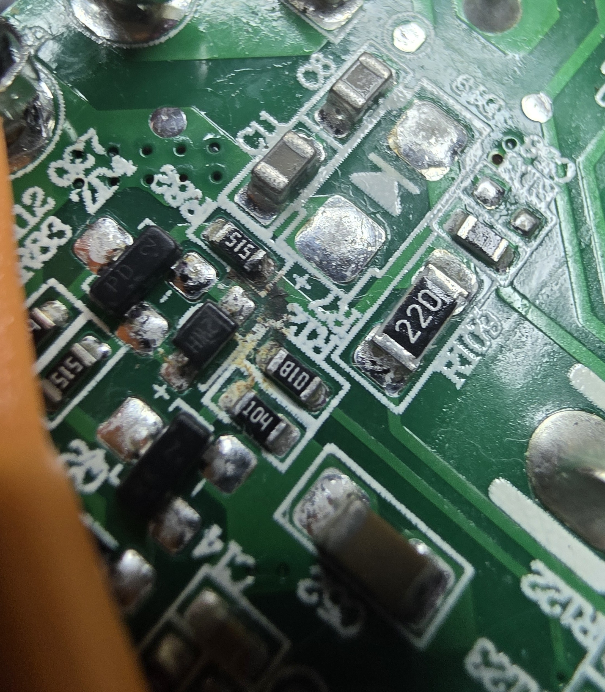
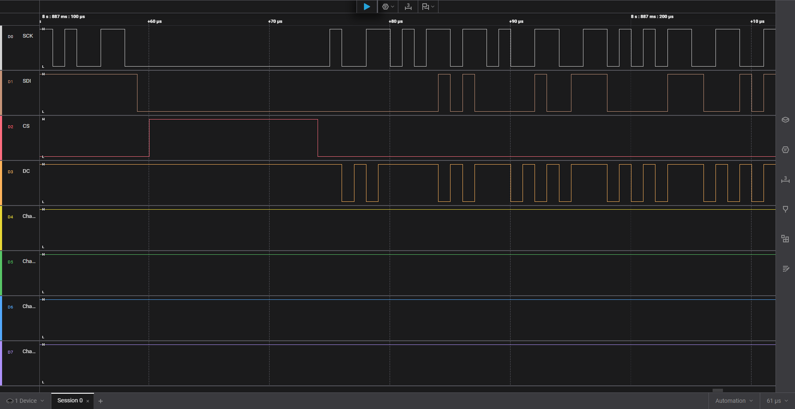

PCB Bring-Up · Failure Analysis · Embedded Debug · Nationwide
Your engineers design it. We make sure it works. Hands-on lab support so your team can move forward without adding headcount.
Practical, hands-on lab support for hardware teams at any stage. Clear answers, documented results, and a path forward.
A fully equipped investigation and validation lab. Not a soldering table.
The same approach on every project: capture the signals, correlate behavior, remove the guesswork.




Send the hardware and relevant background info. Schematics, complaint description, or test procedure depending on the job.
Hands-on bench work gets done. No onboarding, no headcount, no one to manage.
Clear documentation, photos, and a path forward. Typical turnaround 1–3 business days.
Yes. J-Tech LabWorks operates on a ship-in model and works with engineering teams nationwide. You ship hardware and documentation, we do the work, and results come back fast.
You ship the hardware along with relevant documentation — schematics, complaint description, or test procedure for validation work. We perform the hands-on work and return results with clear documentation and photos.
Yes — most small projects are completed in 1–3 business days. We'll confirm scope and timeline up front.
Absolutely. We work NDA-friendly by default and can use your standard NDA or provide ours.
Jerry was a critical contributor during my time at Sleep Number, working in the R&D department. His attention to detail with test fixtures, ability to quickly assemble and bring up PCBAs, and troubleshoot PCBs in the prototype phase through to production was essential for the launch of the Climate 360 platform. He efficiently managed tasks from the pipeline project, while supporting all team members with various R&D efforts with respect to troubleshooting, re-work of first run boards, and validation. Jerry's impact on the team and the pipeline project was a significant factor toward meeting the expected launch date of the platform and ensuring a smooth production run. I wholeheartedly recommend Jerry to any organization looking to streamline their design validation process, provide experience-rooted input for manufacturing, and general troubleshooting support through all phases of a product design.
J-Tech LabWorks is a contract electronics lab serving hardware engineering teams nationwide, specializing in PCB bring-up, failure analysis, embedded debug, signal and power integrity, and NPI support.
Founded and run by Jerry Anderson, a hands-on electronics professional with experience supporting R&D, product development, validation, and sustaining work at Fortune 500 consumer electronics companies and medical device manufacturers.
The focus is practical, execution-first support with clear communication and fast turnaround. NDA-friendly by default. Ship-in model, works nationwide.
Reach out with a quick description of what you're working on. No commitment required.
Or email directly: janderson@jtechlabworks.com